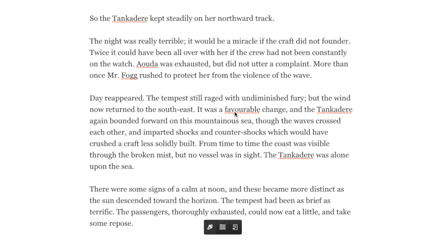
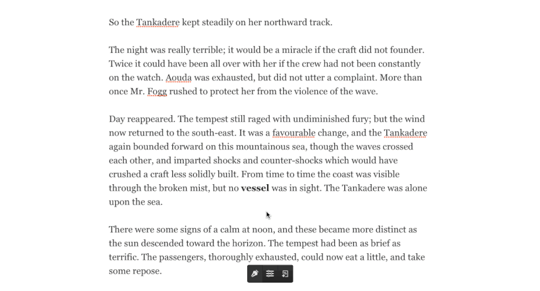
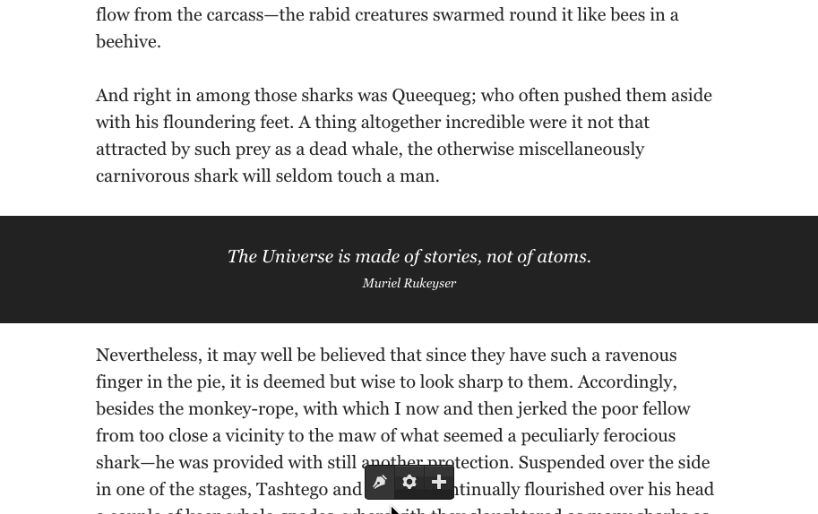

Editus is a front-end editor plugin for WordPress allows you to create, edit, and publish content on the front-end, and was originally designed to work closely with Aesop Story Engine, the free WordPress plugin for storytelling. This is the very same editor found on Story.AM. Out-of-the-box it works on any post type whether it be posts, pages, or custom post types. It also features built-in support for editing standard images inserted via the WordPress post editor, as well as front-end support for changing the title and featured image.
If you're utilizing Aesop Story Engine, the components can be moved freely around the post, and most component settings are adjusted in real-time. This includes gallery creation and editing, all done on the front-end.
The editor is a "toolbox overlay," so what you're seeing is 100% what you're getting, since you're editing the actual post content, and not just a preview of it.
Aesop Story Engine does not have to be active. In fact using the built-in filters and actions you can build an entirely new front-end editor specific to any use case.
Warning: Editus saves the HTML of a post object into the database. If Aesop Story Engine is activated it converts these shortcodes into HTML on the fly. The only drawback that you need to be aware of, is this; if your post has anything other than text or an Aesop Story Engine component, it will save the HTML of this into the post/page. There's a setting (outline below) that let's you specify the CSS class names of these items so that Editus will ignore them when it saves.
Out of the box we support Jetpack sharing.
Two ways to install. Pick your poison. Aesop Story Engine is not required in order to use Editus, but it is required if you want to utilize movable story components (unless using custom components).
Easy (through WordPress)
Not So Easy (FTP)
Note: If multisite, network activate the plugin. This will create a submenu page under the Settings tab in Network-->Dashboard within WordPress. All subsites on the network will use the settings from this main network panel. This is how the editor is configured on Story.AM.
Note: Editus can be used independently of Aesop Story Engine. In fact, you can use the provided actions and filters to build your own components, and your own options within the Editor. The sky's the limit :).
Warning: Editus saves the HTML of a post object into the database. If Aesop Story Engine is activated it converts these shortcodes into HTML on the fly. The only drawback that you need to be aware of, is this; if your post has anything other than text or an Aesop Story Engine component, it will save the HTML of this into the post/page. There's a setting (outline below) that let's you specify the CSS class names of these items so that Editus will ignore them when it saves.
Out of the box we support Jetpack sharing.
Whether you have network activated Editus on a multisite network, or simply have it activated on a single-site, the setup is still the same. At minimum, the editor requires the Article Class, or, the CSS class of the main container holding the post. Everything else is optional.
Note: There is only one requirement of the theme utilizing Editus; the content area must have the_content filter applied via WordPress. For 99% of themes this is fine, but there are those odd balls that do exist.
Warning: Editus saves the HTML of a post object into the database. If Aesop Story Engine is activated it converts these shortcodes into HTML on the fly. The only drawback that you need to be aware of, is this; if your post has anything other than text or an Aesop Story Engine component, it will save the HTML of this into the post/page. There's a setting (outline below) that let's you specify the CSS class names of these items so that Editus will ignore them when it saves.
Out of the box we support Jetpack sharing.
The Editor controls can be found at the bottom of any page or post on the front-end. To start editing, click the "pen" icon. Then, click anywhere in the text and start typing. Highlight a piece of text with your mouse, then choose any of the available formatting options such as Bold, Underline, Italicize, or Strikethrough. The post can be saved by clicking the blue "disk" icon in the bottom right hand corner.
HTML can be inserted by clicking the "< >" icon. When you click away, the editor will remember where your cursor last left off, and will insert the HTML in the exact area. Note: HTML can't be edited from the front-end once inserted. You'll need to access your "text" tab within the backend post edit screen in WordPress.
Links can be created by first highlighting the text, then selecting the link icon in the toolbar. Type in the URL, then click the check button save. To edit an existing link, double click a link while in edit mode, and the link will be supplied in the permalink drop-up area. Change the link, then select the check button save, and the link will be udpated.
Categories can be added from a single post settings modal. Open the settings modal, then start typing in the category input area to select an existing category to add to the post. If the category isn't present, after typing press space or enter to add a new category. Post tags are added in the same manner.
If your current WordPress theme supports post-thumbnails, then you will be able to set the featured image for the post. To do so, open the settings modal, then click the "edit" icon over the image to select and insert an image. Click the "close" icon to delete the featured image. This is saved automatically and provides an indicator to show it's saving status.
All of your posts can be accessed by clicking the "list" icon in the Editus toolbar. Upon clicking this button a modal will pop up showing your posts and pages. Clicking the "load more" button will load the next set of posts or pages. Custom post types are supported with a filter.
This feature requires the WP REST API plugin, which will soon be part of WordPress. After activating Editus you'll be asked to confirm, and will direct you to install this plugin.
Adding a new post can be done at anytime with the add new post button in the Editus toolbar. This is present, along with the list all posts button, on all pages of your site when you are logged in (only displayed to those with the correct permissions).
Story components can be accessed by clicking the "+" after entering the editor. From here, you can drag an icon onto the story. After the component has been added, you can move it around the story as you see fit. The text in the story cannot be moved. Only components.
Within each component you'll find a settings bar with four icons. These icons will let you move the component, enter that components settings, clone that component, or delete that component.
First add the gallery component by dragging it from the component tray into a post. Select the gear icon, then select a gallery to load. If you have not created any galleries previously, then there will be a button to create a new gallery. For the time being, this area does require a page refresh but we hope to eliminate this in future updates.
Note: This feature is only available if Aesop Story Engine is installed.
NEED GIF HEREAdd a map component by dragging it from the component tray into a post. There is only one map allowed per post at this time. After adding, click anywhere on the map to add a map marker. Then, click the marker to add a location tooltip text. You can drag the markers around, as well as zoom out and adjust the pan. After things are setup the way you like, click "save locations." Then, save the post.
For the time being, to edit existing locations, delete the map component, and add it back again. The locations will not be removed, but for now this is the only way to invoke editing map locations. We hope to eliminate this on future updates.
Note: This feature is only available if Aesop Story Engine is installed.
NEED GIF HEREFilter the notices shown to the user on activation
editus_preflight_noticesFilter where Editus can be used and who can use it. By default this is set to is_singular() and editus_user_can() which equates to edit_posts.
editus_runs_onFilter the capability level for the editor (default is edit_post).
editus_capabilitiesFilter the array of objects being localized with js
add_filter('editus_localized_objects', 'my_localized_objects', 10, 1 );
function my_localized_objects( $args ) {
// your new args
$my_args = array(
'foo' => 'bar'
);
// return and merge with the existing args
return array_merge( $args, $my_args );
}Filter the array of arguments for saving a post gallery.
add_filter('editus_insert_gallery_args', 'my_gallery_args', 10, 1 );
function my_gallery_args( $args ) {
// your new args
$my_args = array(
'foo' => 'bar'
);
// return and merge with the existing args
return array_merge( $args, $my_args );
}Filter the array of arguments for inserting a new post.
add_filter('editus_insert_object_args', 'my_object_args', 10, 1 );
function my_object_args( $args ) {
// your new args
$my_args = array(
'foo' => 'bar'
);
// return and merge with the existing args
return array_merge( $args, $my_args );
}Filter the array of arguments for updating the status of a post object. I.e, draft to publish, etc.
add_filter('editus_object_status_update_args', 'my_update_args', 10, 1 );
function my_update_args( $args ) {
// your new args
$my_args = array(
'foo' => 'bar'
);
// return and merge with the existing args
return array_merge( $args, $my_args );
}Filter the array of arguments for saving an existing post object.
add_filter('editus_object_save_args', 'my_object_save_args', 10, 1 );
function my_object_save_args( $args ) {
// your new args
$my_args = array(
'foo' => 'bar'
);
// return and merge with the existing args
return array_merge( $args, $my_args );
}Filter the array of arguments for publishing a new post object.
add_filter('editus_object_publish_args', 'my_object_publish_args', 10, 1 );
function my_object_publish_args( $args ) {
// your new args
$my_args = array(
'foo' => 'bar'
);
// return and merge with the existing args
return array_merge( $args, $my_args );
}Filter the array of arguments for updating a post object title.
add_filter('editus_title_updated_args', 'my_title_updated_args', 10, 1 );
function my_title_updated_args( $args ) {
// your new args
$my_args = array(
'foo' => 'bar'
);
// return and merge with the existing args
return array_merge( $args, $my_args );
}Filter the list of components available to the editor. Here are a some examples.
add_filter('editus_components', 'my_components');
function my_components() {
// return your own options or merge with array_merge
$components = array(
'foo' => array(
'name' => 'Name of Component',
'content' => callback()
),
'bar' => array(
'name' => 'Another Component',
'content' => callback();
)
);
return $components;
}Add a CSS class to the control bar.
add_filter('editus_control_classes', 'my_control_classes');
function my_control_classes() {
// return your class
return 'my-class';
}Add a CSS class to the settings sidebar.
add_filter('editus_sidebar_classes', 'my_sidebar_classes');
function my_sidebar_classes() {
// return your class
return 'my-class';
}Add a CSS class to the text toolbar.
add_filter('editus_toolbar_classes', 'my_toolbar_classes');
function my_toolbar_classes() {
// return your class
return 'my-class';
}Add a CSS class to the component settings toolbar.
add_filter('editus_component_classes', 'my_component_classes');
function my_component_classes() {
// return your class
return 'my-class';
}Add a CSS class to the post settings modal.
add_filter('editus_modal_settings_classes', 'my_modal_settings_classes');
function my_modal_settings_classes() {
// return your class
return 'my-class';
}Add a CSS class to the post settings modal.
add_filter('editus_modal_post_classes', 'my_modal_post_classes');
function my_modal_post_classes() {
// return your class
return 'my-class';
}Add a CSS class to the wrapper used to edit WordPress inserted images.
add_filter('editus_wpimg_classes', 'my_wpimg_classes');
function my_wpimg_classes() {
// return your class
return 'my-class';
}Add an array of custom options that represent all custom components.
add_filter('editus_custom_options', 'my_custom_options');
function my_custom_options(){
$settings = array(
'docs-image' => array(
'name' => 'Image',
'type' => 'single',
'atts' => array(
'src' => array(
'type' => 'media_upload',
'default' => '',
'desc' => 'Image URL',
'tip' => 'URL of IMage'
)
),
'desc' => 'Creates an image'
),
'docs-sketchfab' => array(
'name' => 'Sketchfab',
'type' => 'single',
'atts' => array(
'model' => array(
'type' => 'text',
'default' => '',
'desc' => 'Sketchfab Model ID',
'tip' => 'ID of the Sketcfab Model'
)
),
'desc' => 'Creates an Sketchfab image'
),
'docs-video' => array(
'name' => 'Video',
'type' => 'single',
'atts' => array(
'id' => array(
'type' => 'text',
'default' => '',
'desc' => 'YouTube Video ID',
'tip' => 'URL of Video'
)
),
'desc' => 'Creates an embeddable video'
)
);
return $settings;
}Filter the slides available in the welcome tour
editus_tour_slidesFilter the list of automatically ignored items. These items are different than are what is saved in settings-->ignore classes.
editus_dont_saveWith 0.9.4 a new Settings API has been introduced, that allows other plugins to easily create additional settings within the settings modal. This filter is different than the editus_post_settings filter above. That filter adds your data as a serialized array into the Editus post settings field. This new API creates a dedicated tab, with a dedicated callback, allowing you to create integrations with other plugins like ACF, CMB, Ninja Forms, Gravity Forms, and more.
add_filter('editus_modal_tabs','try_tabs',10,1);
function try_tabs( $tabs ){
$tabs[] = array(
'name' => 'Tab',
'callback' => 'mytestcallback'
);
return $tabs;
}
function mytestcallback(){
ob_start();
$out = 'My Content';
return $out;
}
With 0.9.4 posts and pages are accessible from the front end. You can easily opt other post types in so that they will be listed here as well, with all appropriate callbacks taken care of.
add_filter( 'editus_post_types', $array_of_post_types );Fired when the featured image is set.
do_action( 'editus_featured_image_set', $postid, $image_id, $userid );Fired when a new post is created.
do_action( 'editus_new_object', $postid, $object, $title, $userid );This is fired when an existing post is updated.
do_action( 'editus_post_updated', $postid, $slug, $status, $userid ); Fired when an existing post is saved. Hook into this to override where the content from the editor is saved. For example, you could use Editus on a custom field and save this to post meta.
add_action('editus_post_saved', 'my_new_save', 10, 3 );
function my_new_save( $postid, $content, $userid ) {
update_post_meta( $postid,'some_key', $content );
}
Fired when a new gallery is created.
do_action( 'editus_gallery_published', $postid, $gallery_ids, $userid );Fired when an existing gallery is saved.
do_action( 'editus_gallery_saved', $postid, $gallery_ids, $userid );Fired when a post is published from draft.
do_action( 'editus_post_published', $postid, $content, $userid ;Fired when the title is updated.
do_action( 'editus_title_updated', $postid, $title, $userid );Fired when the user decides to not have the Welcome Tour shown anymore
do_action( 'editus_tour_hidden', $postid );Fired before the start of the controls allowing you to place custom component icons in the tray.
do_action( 'editus_editor_controls_before' );Fired after the controls allowing you to place custom component icons in the tray.
do_action( 'editus_editor_controls_after' );Fired at the end of the list of components in the drop-up menu.
editus_toolbar_components_beforeFired at the end of the list of components in the drop-up menu.
editus_toolbar_components_afterFired at the end of the list of components in the drop-up menu.
editus_toolbar_componentsFired at the end of the post settings form in the post settings modal.
editus_modal_post_formFired at the end of the post settings form in the post settings modal footer typically used for inserting hidden form fields.
editus_modal_post_form_footerDetermines who can use the editor. By default this returns is_user_logged_in() and current_user_can('edit_post')
editus_user_canAdding this define will remove the License panel, and links to Editus website and documentation. It essentially white-labeles the plugin so there's no confusion for the agency.
define('EDITUS_AGENCY_MODE',true);Because Editus saves the HTML of a post, there are some cases where your theme may have additional markup within it. To avoid saving this as HTML, put the class .editus--ignore on any element within the post container.
.editus--ignoreHit the link below for a sample plugin that demonstrates how to add a custom component in two different ways; one using a shortcode, and one using the markup of your choice. Component options are added as data-attributes and are only shown if the user is logged in, and if that user has the correct capabilities. The settings in the settings panel are then "mapped" to the data-attributes on the fly. This is how you're able to use a component that's in shortcode form, or just normal markup. Skies the limit!
https://github.com/AesopInteractive/sample-addonAll component functions inside public/includes/components.php are pluggable